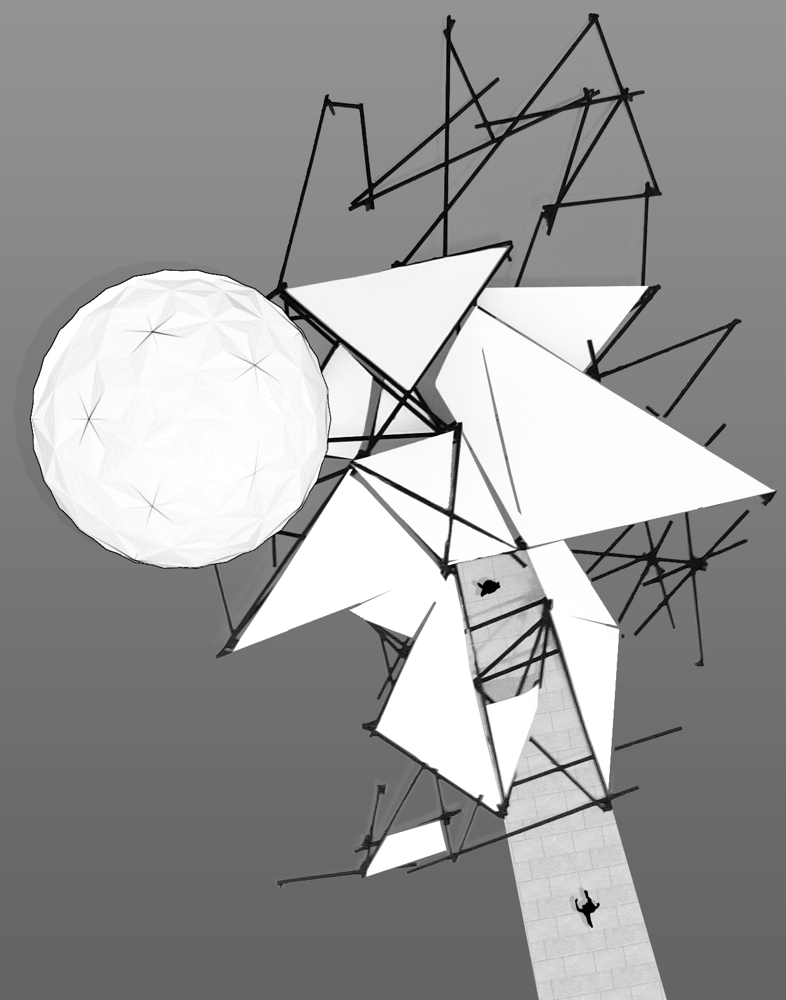

Observatory
Connected to the Black Box Theatre, the observatory designed by a charcoal sketch with lines. The sketch then progressed and came to fruition, allowing the charcoal to take over. The stick model and planes form from the charcoal sketch. Certain planes overlap one another. Forming these triangular patterns surrounding the planetarium, possessing almost a similar language as the Black Box Theatre.
